登入以繼續分享
請先登入你的 Google 帳號，才能分享結局卡片。
登入以繼續分享
請先登入你的 Google 帳號，才能分享結局卡片。
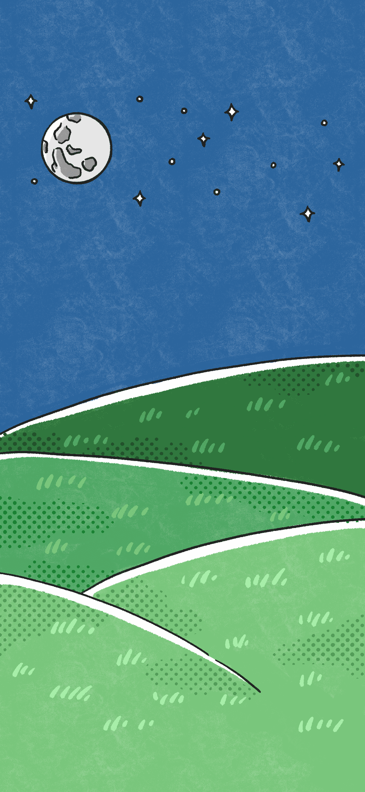
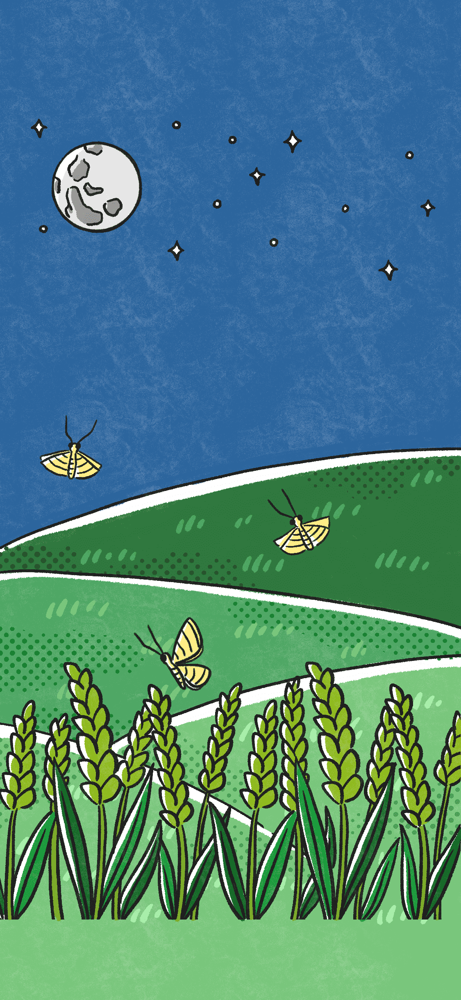

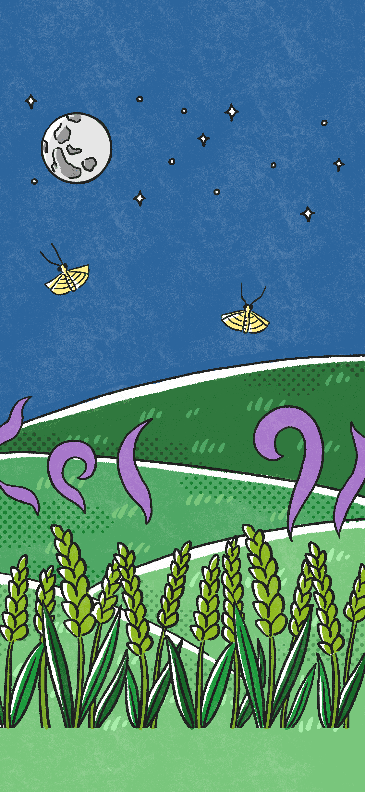
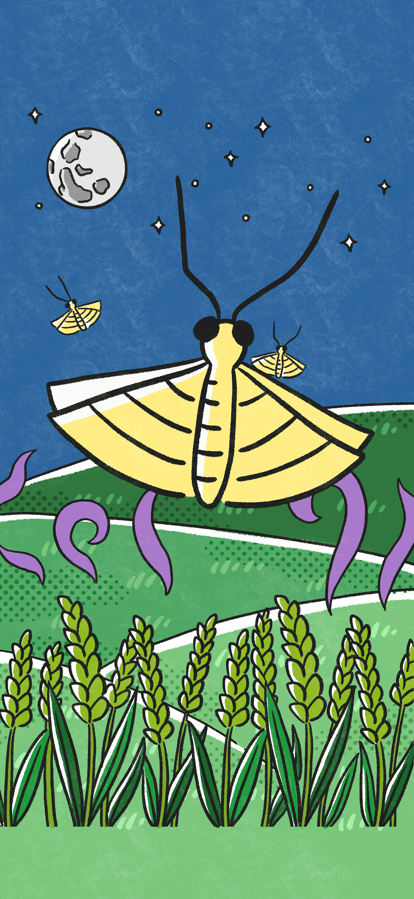
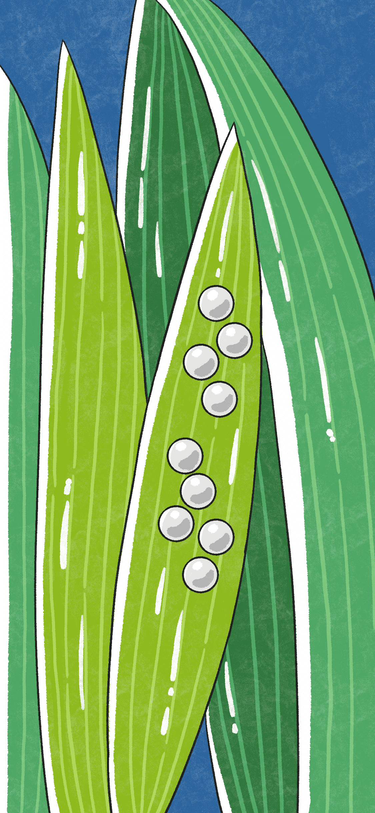
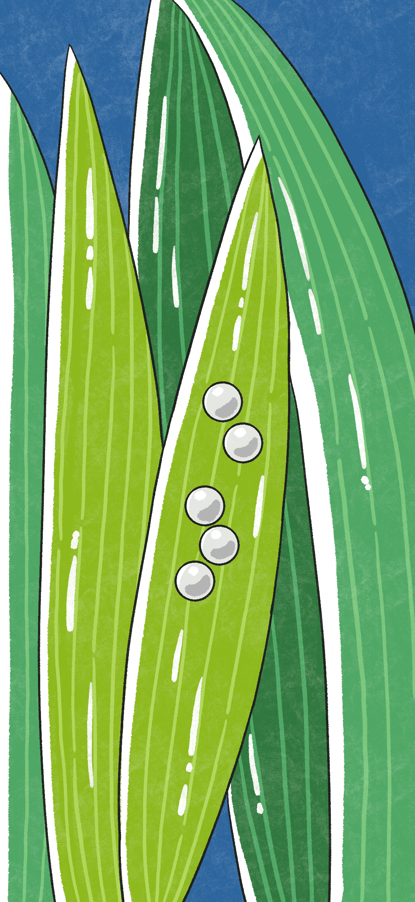
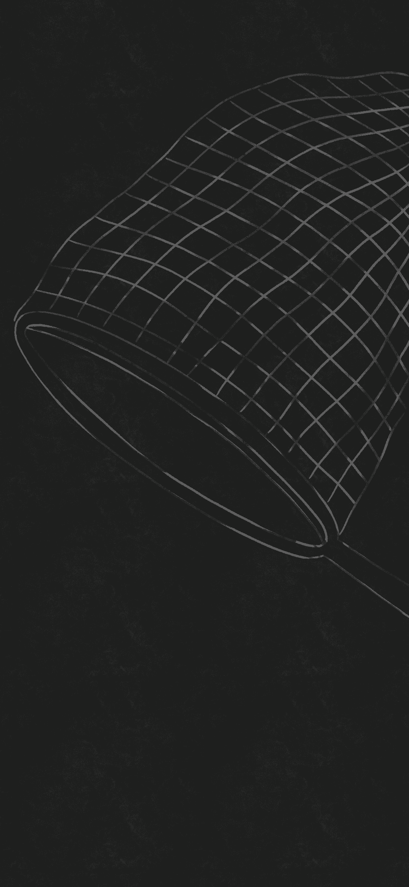
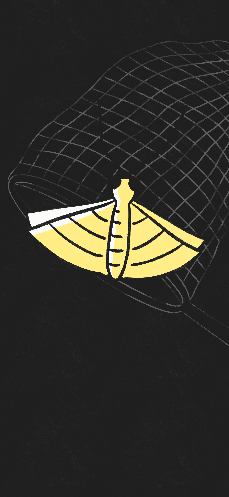
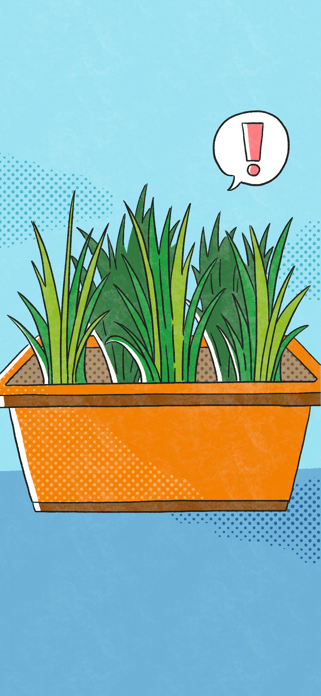
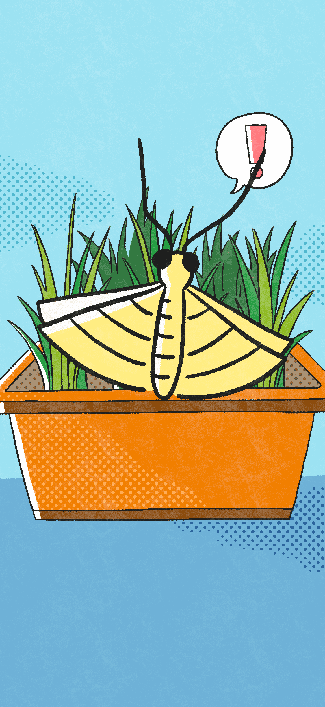
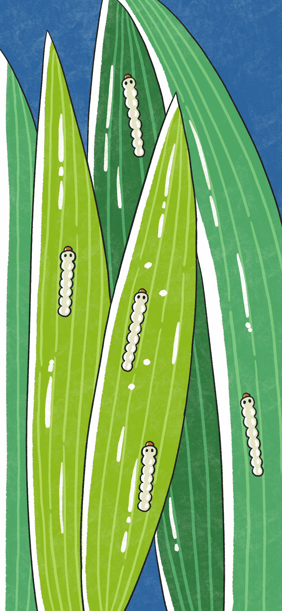
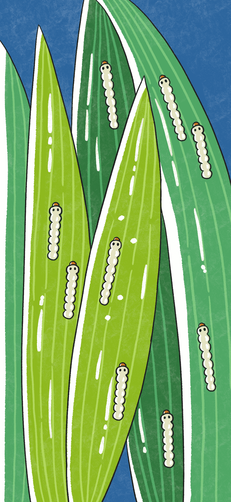
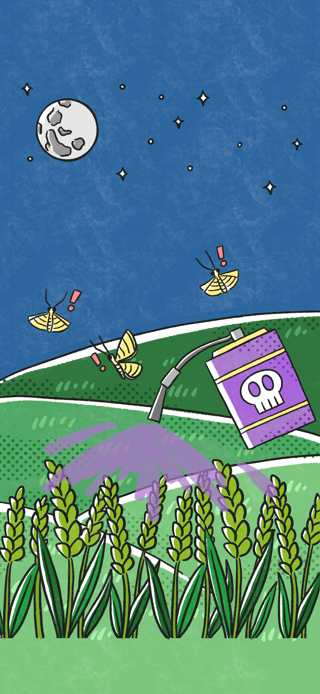
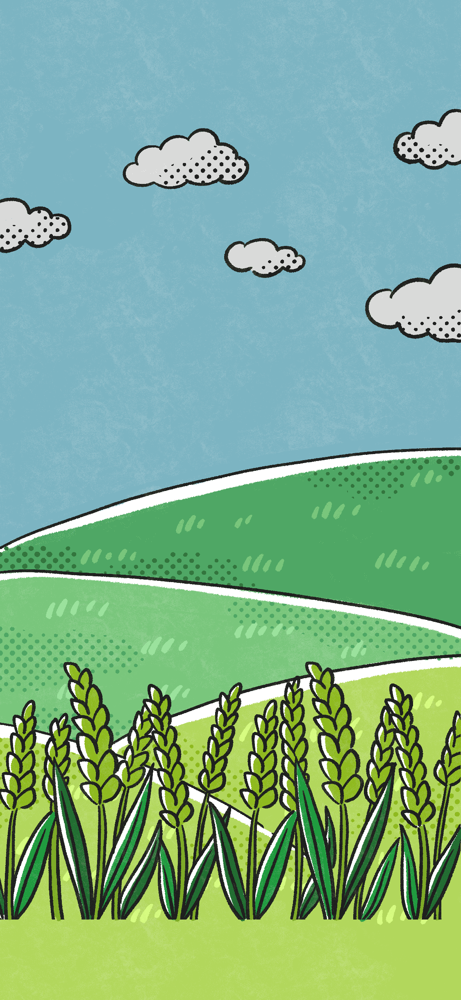
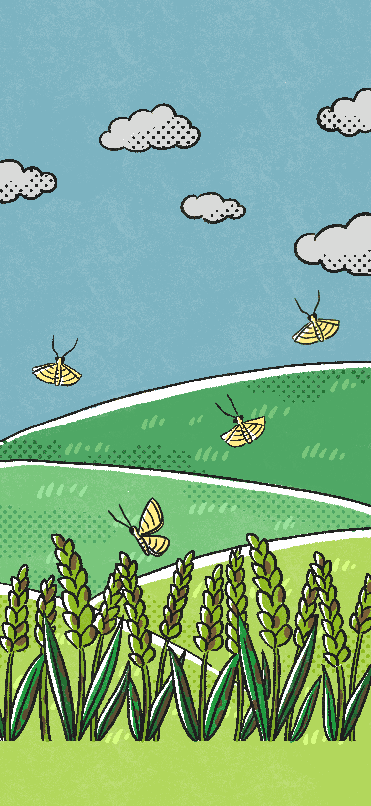

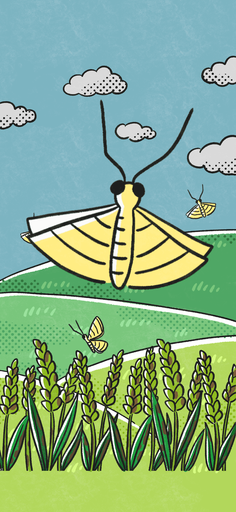
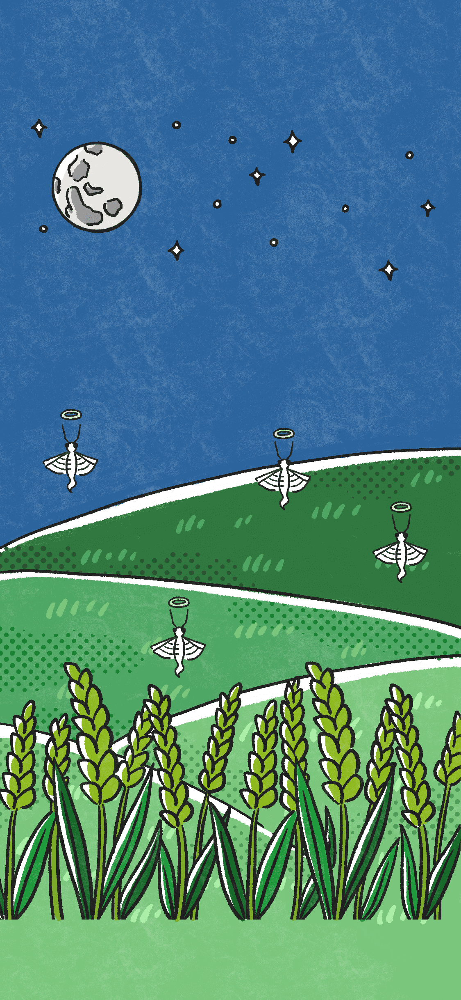
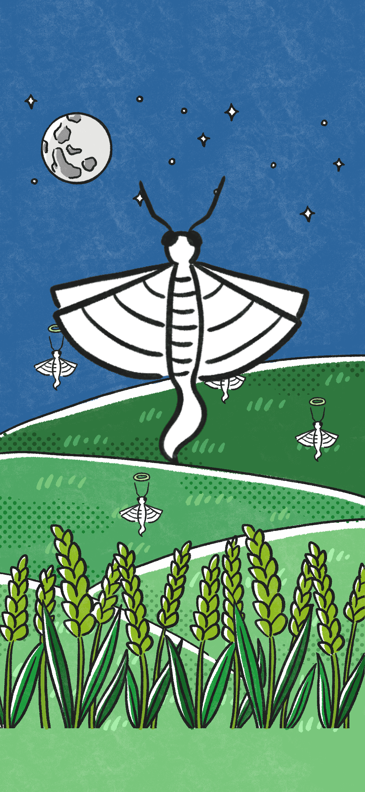
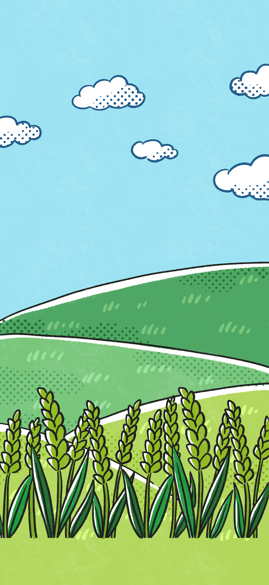


我們是 No Fold，CCU-Taiwan iGEM 團隊，由國立中正大學各學院的學生所組成，涵蓋理學院、工學院、社會科學院、文學院，以及跨領域學士學位學程的同學。
我們團隊計畫利用生物合成學的方式，開發可用於驅趕農業害蟲瘤野螟的系統，希望大家了解農藥對世界的危害以及增進大眾對有機稻米的認知。